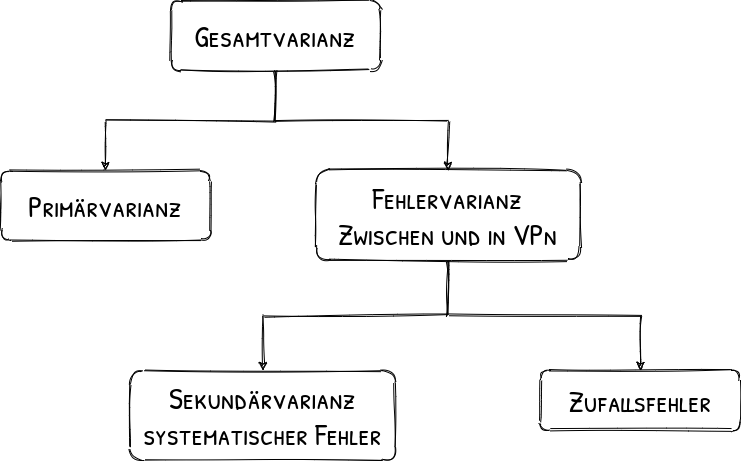
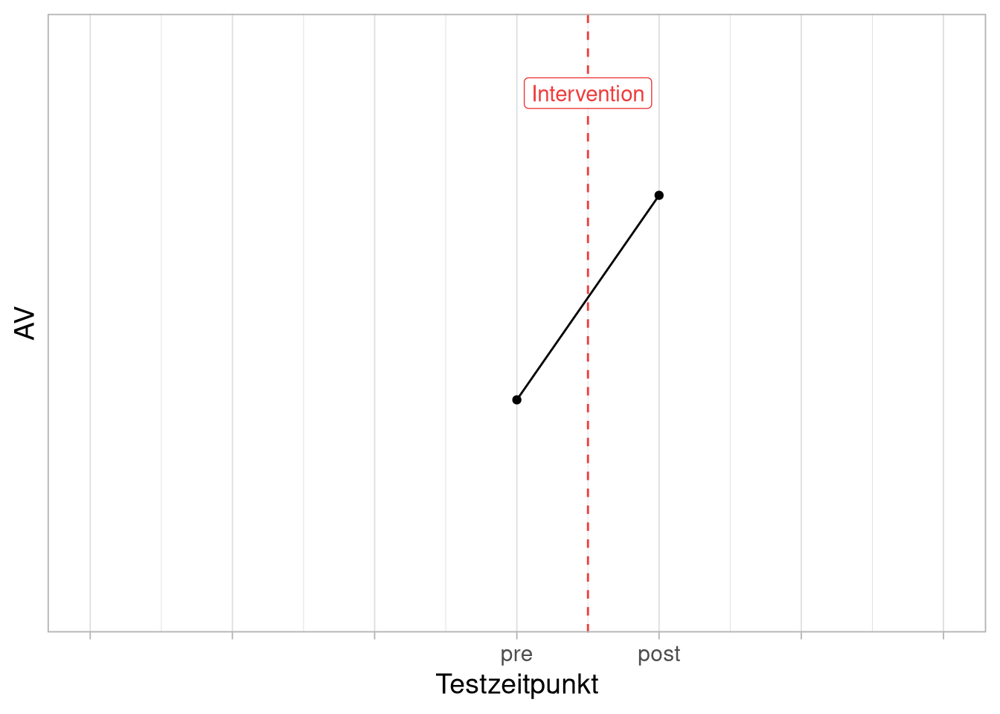
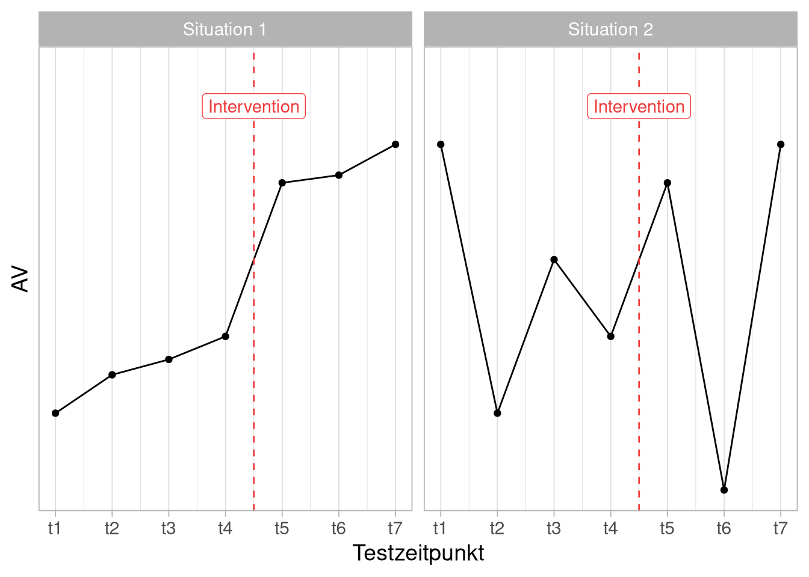
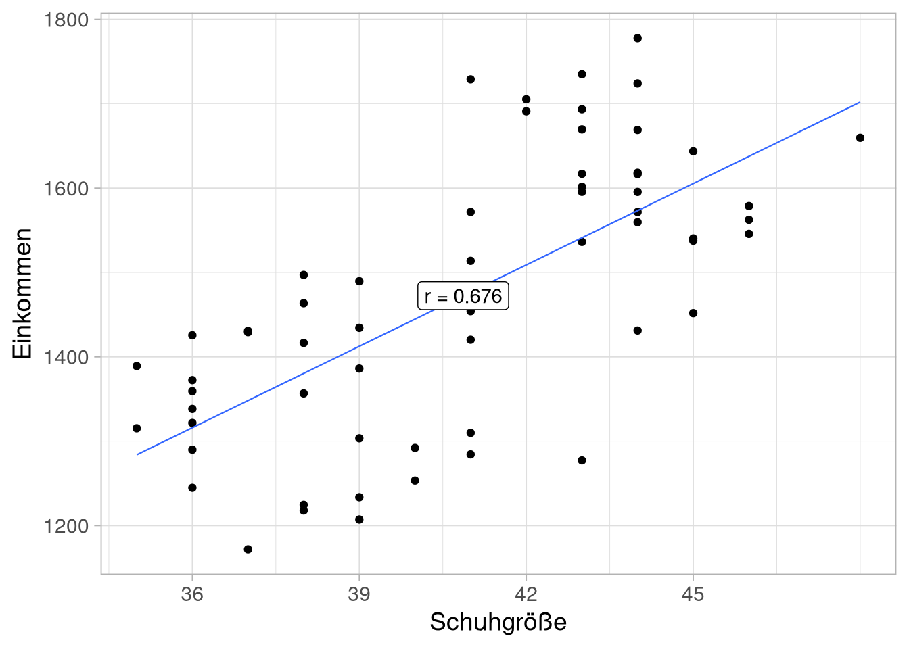

nicht-experimentelle Versuchspläne
Organisatorisches
Semesterplan
| Sitzung | Datum | Sitzungstitel |
|---|---|---|
| 1 | 02.11.2020 | Warum wissenschaftliche Psychologie |
| 2 | 28.11.2020 29.11.2020 | Hypothesen und der Prozess der Hypothesenprüfung |
| 3 | 28.11.2020 29.11.2020 | Experimentelles Vorgehen |
| 4 | 28.11.2020 29.11.2020 | Literaturrecherche |
| 5 | 28.11.2020 29.11.2020 | Operationalisieren und Messen |
| 6 | 12.12.2020 13.12.2020 | Experimentelle Versuchspläne |
| 7 | 12.12.2020 13.12.2020 | Störvariablen im Experiment |
| 8 | 12.12.2020 13.12.2020 | Nicht-experimentelle Versuchspläne |
| 9 | 12.12.2020 13.12.2020 | Material und Stichprobe |
| 10 | 23.1.2021 24.1.2021 | Auswertung, Darstellung und Interpretation |
| 11 | 23.1.2021 24.1.2021 | Ethische Probleme im Versuch |
| 12 | 23.1.2021 24.1.2021 | Publikationsprozess |
| 13 | wird noch bekannt gegeben | Vorstellung der Gruppenarbeiten |
| 14 | wird noch bekannt gegeben | Klausurvorbereitung |
Wiederholung
Varianz der abhängigen Variable
Sehr wenig Varianz
Graue Flecken an den Kreuzungen
Sehr viel Varianz
Die Attraktivität dieses Mannes


Quasiexperimentelle Designs
Trendanalyse
Beispiel 1: nicht-linearer Zusammenhang zwischen UV und AV erwartet
Abb. 10: Yerkes-Dodson-Gesetz
Beispiel 2: Dosis-Wirkbeziehung soll untersucht werden
Abb. 11: Aus Di Castelnuovo et al. (2006).
Conclusions: Low levels of alcohol intake (1-2 drinks per day for women and 2-4 drinks per day for men) are inversely associated with total mortality in both men and women. Our findings, while confirming the hazards of excess drinking, indicate potential windows of alcohol intake that may confer a net beneficial effect of moder- ate drinking, at least in terms of survival. (Di Castelnuovo et al. 2006)
Zu dieser Studie gibt es auch ein sehr unterhaltsames Video von Dr. Nguyen-Kim
nicht-äquivalente Kontrollgruppen
- Auswirkungen einer bestimmten Unterrichtsmethode auf Schülerleistung
- Vergleich von zwei Klassen mit Methode A vs. B
- Klassen unterscheiden sich in vielen Merkmalen …
- Natürliche Entwicklung oder Entwicklungspotenzial kann sich unterscheiden …
Kontrolle von Störvariablen:
Hypothesen aufstellen, was relevante Störvariablen sein könnten (Literatur!)
Störvariablen zumindest messen und ggf. statistisch kontrollieren („rausrechnen“)
Möglichst viele Klassen untersuchen
Beispiel: Token-System in Schulklassen
| Messzeitpunkt | |||
| pre | post | ||
| Tokens | ja (Klasse A) | # Meldungen | # Meldungen |
| ja (Klasse B) | # Meldungen | # Meldungen | |
Zeitreihenversuchspläne
Wir beobachten jetzt das folgende Ergebnis:

Ist unsere Intervention wirksam?

Zeitreihe
Mehrfache Messung der selben Vpn, bzw. allgemein der Beobachtungseinheiten, in \(>\) 2 Bedingungen. Jede Vp ist immer allen Bedingungen zugeordnet (jede Beobachtungseinheit allen Stufen des Faktors).
UV:
Messwiederholungsfaktor mit mehr als 2 Stufen (oft sowohl mehrere Vorher- als auch Nachhermessungen)
Vorteile:
Kann besser zwischen zufälligen Schwankungen, „Zeit“-Effekten und UV-Einfluss unterscheiden als bei nur einer Vorher- bzw. Nachhermessung
Nachteile:
Abgrenzung von Effekten der UV gegenüber Störeinflüssen der „Zeit“ ohne Kontrollgruppe nicht eindeutig
Bedrohung der internen Validität
Bedrohungen der internen Validität in quasi-experimentellen Designs (nach Campbell & Stanley, 1966; siehe auch Sarris & Reiß, 2005, S. 73f):
Zeitgeschehen (history): unerwartete Ereignisse , Effekt geht nicht auf das Treatment, sondern auf ein anderes Ereignis zwischen Pretest und Posttest zurück
Reifung (maturation): natürliche Entwicklung, Effekt geht auf biologische oder psychosoziale Entwicklung zwischen den Messzeitpunkten zurück
Testwiederholung (test sophistication): Einfluss der Vormessung, Effekt wird durch Lern- oder Erinnerungseffekt aufgrund früherer Messung verzerrt
Testveränderung (instrumentation): veränderte Messung, Effekt ändert sich durch Wechsel des eingesetzten Instruments oder der Beobachter zwischen den Messungen
Statistische Regression (regression to the mean) Extreme mitteln sich aus, bei Gruppenaufteilung nach Vormessungin hohe und niedrige Werte führt der statistische Fehlerausgleich bei der Nachmessung zu weniger extremen Unterschieden
Auswahlverzerrung (selection bias) Unterschiede vor Treatment, Effekt des Treatment wird bei fehlender Randomisierung durch bestehende systematische Unterschiede überlagert, Verzerrungen können ferner durch Interaktion der Vorauswahl mit anderen Validitätsbedrohungen entstehen
Ausfalleffekte (experimental mortality) Unterschiede nach Treatment, Effekt im Posttest wird konfundiert durch systematische Unterschiede zwischen ausgefallenen und verbliebenen Vpn.
Versuchsleitereffekte (experimenter-bias)
Interaktive Effekte / Übertragungseffekte (carry-over effects)
Ex-post-Facto-Studien
suchen rückblickend („ex post“ \(\approx\) im Nachhinein) aus der Beobachtung der AVn nach den diese verursachenden UVn.
sie lassen keine Manipulation der UVn zu, da deren Auswirkungen bereits eingetreten sind, oder diese nicht systematisch manipulierbar sind (z.B. Organismusvariablen).
sie dienen der Bestandsaufnahme und der Hypothesengenerierung, lassen aber keine echten Kausalaussagen zu.
eine begrenzte „Kontrolle“ von (vermuteten) Störvariablen ist nur statistisch über Subgruppenbildung o.Ä. möglich.
1. Ethische Gründe:
- z.B. Untersuchungen zu Auswirkungen des Rauchens
- z.B. Untersuchungen der Effektivität etablierter Therapien
2. Praktische Gründe:
- z.B. Untersuchung von Auswirkungen von Schizophrenie auf Arbeitsgedächtnis
- z.B. Untersuchung des Einflusses von Alter auf die Impulskontrolle
Quer- vs Längsschnittuntersuchungen
Alter als UV \(\rightarrow\) nicht aktiv zu variieren
Querschnittuntersuchung: Einmalige Untersuchung einer Stichprobe von in verschiedenen Altersgruppen (Kohorten) zum gleichen Zeitpunkt
- (Alter between-subject UV)
- ermöglicht die Untersuchung von Kohorten-/Alterseffekten
Längsschnittuntersuchungen: Mehrfache Untersuchung einer Stichprobe von gleichaltrigen Individuen (Kohorte) in verschiedenen Altersstufen zu unterschiedlichen Zeitpunkten
- (within-subject UV)
- ermöglicht die Untersuchung von individuellen Verläufen und somit die zukünftige Erstellung von Prognosen
Korrelative Untersuchungen
- korrelativer Zusammenhang zweier oder mehrerer nicht manipulierter Variablen.
- Auch regressionsanalytische Ansätze: Vorhersage von Y (AV) auf Basis von X (UV)
- Es kann nicht auf einen Kausalzusammenhang geschlossen werden.
- Eine begrenzte „Kontrolle“ von (vermuteten) Störvariablen ist nur statistisch über Partialkorrelationen o.Ä. möglich.
Die Korrelationsforschung hat dennoch einen hohen Stellwert für die experimentelle Forschung:
- Bestimmung von Reliabilität und Validität mittels korrelativer Verfahren
- Korrelatives Designing im Zusammenhang mit Blockversuchsplänen und semiexperimentellen Mischversuchsplänen (\(\rightarrow\) mehrfaktorielle Pläne bei denen eine aber nicht alle UVs echt experimentell sind)
- Korrelativ-statistische Kontrolle von Störvariablen oder inhomogener Manipulation der UV (\(\rightarrow\) Kovarianzanalyse)
Ist der Testkennwert TMT-B/A ein geeigneter Indikator zur Erfassung kognitiver Flexibilität?

Nicht-experimentelle Untersuchungen
Beispiele:
- Einmalige Untersuchung einer Gruppe vor und nach Intervention
- Einmaliger Vergleich von zwei Gruppen nach Intervention
- Einzelfallbericht
- Anwendungsbeobachtung